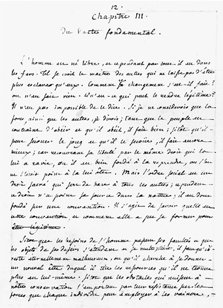
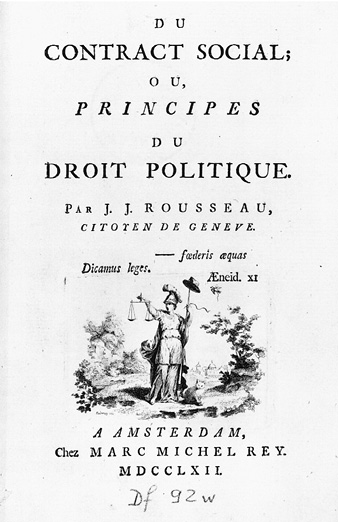
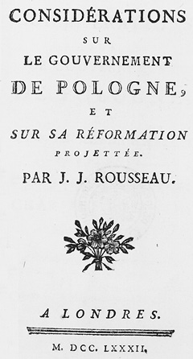

1750年代初，卢梭凭借“一论”“二论”和《论法国音乐的通信》成为蜚声欧洲启蒙运动和公民社会的批评家。他希望能在当时由杰出人物发起的反对宗教偶像崇拜和政治不公的运动中贡献自己的力量，然而，他关于这些主题的著作并没有让他受到那些杰出人物的青睐。伏尔泰在当时已经是世界性文化的主要倡导者，他谴责卢梭努力推广野蛮是明显倒退的行为。此外，在1756年的《爱丁堡评论》中，18世纪商业社会及与之相关的道德完善机构的主要倡导者亚当·斯密，也对卢梭尤其在“二论”中所表述的推崇野性、反对文明的观点不以为然。伏尔泰、斯密与其他哲学家一道，详细阐述了激励人类道德进步的教育、政治和经济计划，而卢梭煽动起针对这些人的反对意见，从而成了一切进步的敌人。然而，正如斯密在对“二论”的评论中所说的那样，卢梭把他的工作献给了日内瓦共和国，并获得了成为该国公民所赋予他的深刻荣誉感。卢梭在“一论”的标题页上也宣布了他的公民身份和共和党人身份，尽管他后来控诉他的同胞们背叛了宪法原则。即使在他的学说被他的同胞们谴责为充满煽动性的情况下，他仍然对这座自己出生以及激发他最初热情的城市充满骄傲。
卢梭比18世纪的任何一位重要人物都更加认同经典古希腊学说里政治和道德之间的关联。他认为，如果将现代威尼斯人的恶习归因于国家的腐败，那么其他民族的堕落同样在很大程度上是由于政治犯罪和压迫。在他早期的作品中，他曾经试图在更早、更广阔的历史长河中，通过对当前罪恶进行哲学抽象，对这种堕落追本溯源。他深信，由于当代政府统治下大多数现代人的困境都是由政治制造出来的，因此，采用其他政治原则的国家反而能鼓励善行，从而产生美德而不是邪恶。卢梭在1762年春天出版的《社会契约论》中，相应地描绘了一个振奋人心的政治联盟的设想，其性质与其早期在“一论”和“二论”中所描述的民主社会的特征截然不同。的确，《社会契约论》一书似乎以相反的角度探讨了《论不平等》中的核心主题，描绘了一种团结而非分裂公民的联合契约，这一契约还捍卫公众所参与的平等主义理想，从而增强而非摧毁公民的自由。在描述了公民社会道德腐败的各个阶段之后，卢梭通过列出公民获得自由所需要的制度，提出了与他之前论点相反的观点。通过为合法政权制定多元化、普适性的宪法基础，这位日内瓦共和国最自豪的公民可以一边抨击当时独断的君主专制，一边为那些可以通过臣民的集体自治而获得政治美德的国家提供了一个蓝图。
《社会契约论》中最为出名，或许也是卢梭所有作品中最经常被引用的论述出现在第一卷第一章。在前面三段简洁的介绍中，他建立了自己谈论正义、公平和效用的权威，不是因为他是君主或立法者，而是因为他是一个自由国度土生土长的孩子和公民，因此他是享有主权的一员。“人人生而自由，却无处不在枷锁之中”，卢梭评论道，几乎像是重述他在《论不平等》中阐述过的政治蜕变的可怕传奇。《社会契约论》前几章探讨的主题实际上和“二论”的核心思想非常类似，这几章再次试图说明，无论在家庭还是任何暴权中都不可能存在民主社会的自然基础。卢梭认为，正确的东西无法从暴力中诞生，就像他早先声称的那样，我们的生理差异不能为我们的道德不平等提供正当理由。如果武力能创造权力，那么权力就会像多次变化的武力配置一样时效短暂，一旦获得足够的权力，违抗就会成为合法的。霍布斯在《论公民》的第五章和第六章、《利维坦》的第十八章及其他著作中都表明，势力和权力必须始终是相互伴随的。因为没有剑（执行法律的手段）的语言（法律），就不具有足够的约束力。但是在《社会契约论》中，卢梭重申了权力和权威（即拉丁语中的potestas和auctoritas）之间的区别。

图14 《日内瓦手稿》第一卷第三章书页，囊括了《社会契约论》第一卷第一章的开篇
卢梭重申了《社会契约论》中自然和道德的二分法，同时他也否认家庭关系是国家公民之间关系的模型。两千年前，亚里士多德在他的第一本著作《政治学》中就已经提到，将家人维系在一起的不平等的纽带，与国民和统治者之间基于政治性并因此自愿的关系中的根本性平等是完全不同的。卢梭无论是在《社会契约论》中，还是在《政治经济学》开篇中，都承认自己在这一论题上深受亚里士多德的影响，并在很大程度上重述了亚里士多德的论点。事实上，卢梭在《政治经济学》中对公共领域和私人领域的对比与洛克在《政府论（下篇）》中对政权和父权的区分非常相似。和洛克一样，卢梭起初发展了自己的二分法，以驳斥他所称的罗伯特·费尔默爵士的家长制这一“可憎”的体系，他声称，这一体系也首先遭到了亚里士多德的拒绝（《作品全集》第三卷，第244页；《〈社会契约论〉及其他晚期政治著作》，第5—6页）。与亚里士多德和洛克一样，卢梭也认为，道德上平等的人之间的合法政府是通过公众同意而建立的，而不是自然获得的。正如在卢梭早期的政治著作中一样，他在《社会契约论》中态度坚定地认为，在公民社会中，无论正义还是邪恶，人对人的权威都是通过选择而非自然建立起来的，过去是，现在也应该如此。
在《社会契约论》的第二章和第三章中，卢梭通过颠覆性的尝试来驳斥他所理解的之前整个社会契约传统的逻辑，并将这些值得尊敬的思想以新的习语表述出来，从而给予其新的推动力。格劳秀斯的哲学思想当时尤为引发卢梭的愤怒，就像他在“二论”中针对霍布斯、普芬多夫和洛克的观点一样。格劳秀斯追随西塞罗和其他古代作家的观点，认同国民的共识是政权的适当基础，但早在1625年，格劳秀斯就在其《战争与和平法》中提出，全体人民都可以同意服从国王，就像个人可以自由地选择让自己被奴役一样，也就是把自己的自由永远地让渡给某个主人。除了格劳秀斯外，霍布斯和普芬多夫也提出了相似的论点：个人或民族自愿服从统治者标志着国家的合法建立，即通过不可逆转的权利转移，允许或授权其臣民服从绝对权力。格劳秀斯坚持认为，战败者通过向其征服者屈服，就可以放弃对自己的权力，从而忽视了战争实际上是国家之间的关系而不是个人之间的关系这一事实。因此卢梭反对格劳秀斯之前社会契约传统的一个中心前提，根据这一前提，用霍布斯的术语来说，通过制度获得的主权和通过兼并或征服获得的主权之间没有根本的区别。霍布斯认为，尽管君主的权力是无限的，但君主或其权力始终只是人民意志的代理人、代理官员或代表，是扮演人民的演员，因此，人民才是每一场表演的真正作者（《利维坦》，第十六章）。
卢梭理解这种自愿服从的观点是现代法学的基石，他曾在《论不平等》中谴责其恶果和对人性的误解，随后在《社会契约论》中谴责其非法性，并提出了一个完全不同的观点：国家权力的巩固是通过其成员的集体选择而实现的。他认为，格劳秀斯及其契约继承人在自愿服从的学说中犯了两个主要错误。第一个错误是混淆了国家的联合条约和服从条约，假设主权的建立和政府制度的建立是相同的，而它们的基础和责任也同样被误解。正如他在《社会契约论》第三卷第十六章中所论述的那样，政府不是由契约形成的，一个民族不可分割的主权可能永远不会移交给一个国王。在选择将他的巨著 献给国王路易十三时，格劳秀斯并没有表现出对剥夺人民一切权利的内疚。他说，真理不会指向通往财富之路，人民永远不会让任何人成为大使或教授，也不会发放养老金。如果格劳秀斯不将国家的法律机构定位于一个民族将自身交付给国王的行为，而是指出使一个民族成为民族的行为，那样会更好。因为卢梭认为，“社会的真正基础”取决于第一个公约。
卢梭指出的格劳秀斯的第二个错误，霍布斯和普芬多夫也同样犯过，那就是认为人民无条件地服从统治者的意志可能会使个体或集体丢失自由。相反，卢梭宣称，我们放弃自由就是放弃人性，从而从我们的行为中去除所有的道德。一方面建立绝对的权威、另一方面建立无限服从的协议是毫无意义且无效的，因为它从自由中产生奴役，使它的代理人在由于自己的意志造成的问题中自相矛盾。在这篇主要针对格劳秀斯对自愿奴役的批判中，卢梭遵循了洛克《政府论（下篇）》第四章的论点，大意是一个人不能因为自己的意愿而奴役他人。但这个观点的主要来源可能不是洛克本人，而是著名的法国胡格诺派法学家以及格劳秀斯和普芬多夫的主要政治著作的编辑让·巴贝拉克。卢梭也在《社会契约论》中谴责过巴贝拉克，因为他把自己翻译的格劳秀斯的作品献给国王（乔治一世），并因此在阐述原则时显得犹豫和模棱两可，以免冒犯赞助人。普芬多夫于1706年首次发表《论自然法和万民法八书》，巴贝拉克将其翻译成精妙的法文版，并附上了大量的笔记，这些笔记和第七卷第八章的内容均提及洛克先前的论点，即“任何人都不能放弃自己的自由而完全听命于一种专断的权力，因为这将意味着放弃自己的生命，不再是生命的主人”。在《论不平等》和《社会契约论》的批判性反思中，卢梭极大地获益于巴贝拉克对格劳秀斯和普芬多夫的评论，至少他最初得知洛克是通过巴贝拉克对普芬多夫的注释。尤其在《社会契约论》中，卢梭进一步阐述了巴贝拉克所翻译的关于洛克对自愿奴役的批判，从而挑战17世纪所阐述的现代政治哲学的基础，并且使用其术语，这样才能保证不是人民刻意下决心屈服于君主，而是全民共同意识到自己的选择自由。卢梭许多关于自由、平等和主权的思想贯穿于整个《社会契约论》之中，这些思想都是围绕着他与格劳秀斯、普芬多夫和霍布斯的初次交锋而构建的。
正如卢梭所设想的那样，在思辨和唯意志论的传统核心中，存在着这样一种信念：无主之人自然需要一个国家的保护。他宣称：行使不受限制的自由只会危及个人的人身安全，因此，人们正确地认为安全高于自由，而为了获得安全，人们必须把他们的权利转让给这样一个由法律和武器授权的当局，以维持他们之间的和平，并将外敌拒之门外。国家的成员资格不仅要求每个人自愿放弃自己的自由，而且在建立一个统治者对其他人的人为优势时，将所有人的自然平等转变成了政治上的掌控和服从。在《社会契约论》第一卷的第八章和第九章中，卢梭试图彻底地阐明这些观点。他主张，我们从自然状态到公明国家的合适过渡，绝不能压制真正的自由，而应通过将我们单纯的欲望冲动转化为对我们自己制定的法律的服从，从而实现真正的自由。卢梭将自由和平等这两项原则联系起来，构成了《社会契约论》的核心主题。
正如卢梭在第一卷第八章和第二卷第七章中所解释的那样，通过其臣民一致同意而建立的国家，在人类中产生了显著的变化——一种蜕变，这种蜕变被描述为：它产生了超越于个体独立的优越性，但在《论不平等》中，这一蜕变又被描述为走向罪恶的致命一步。卢梭声称，人们在新状态下的胡乱作为经常会导致他们进入比之前状态还要恶劣的困境，这也是在暗指他早期观点的关键点。但是，他在这里强调的是，当社会达成契约，并且公民社会因此得以正确建立时，这种变革会带来崇高的令人振奋的精神。人们放弃在没有公民社会时所拥有的天赋自由，获得了公民与道德的自由，但这种自由首先被共同意志所限制，同时约束人们遵守大家共同制定的法律，使他们成为自己真正的主人。在《论不平等》中，卢梭将人类的原始自由描述为缺乏对自由意志和动物冲动的控制，这只会让关注的读者对其自然自由的新定义感到困惑，而如今这种自由被描述为欲望的奴隶。与“二论”不同的是，《社会契约论》几乎没有提及人类的自然状态，而且其中对动物的评论尤其少，完全没有像在先前的讨论中那样赞赏动物的善良品质。
但卢梭现在争论的目的不同了。他希望表明人类共同参与自治可以极大拓展其自由，超越他们在原始状态下作为野蛮人的身体独立。在这里他将其描述为被内部欲望所约束，而不是被对他人的依赖所制约，而在《不平等论》中，卢梭声称原始人不受其本能支配。与他之前的社会契约思想家相反，卢梭要描述的是人类在实现野心方面相互联合的根本契约，没有这些契约，他们甚至不会有些野心。所以个人必须放弃那种脱离彼此控制的自由，而这种自由因为放弃这一行为而获得了另一个更强化的维度，因为公民从中获得了道德人格和合作利益，这些都是独立的野蛮人难以想象的。霍布斯主张国家中的自由寓于法律的沉默 ，主权者法律的颁布最终通过人对法律的服从而限制了他们的自由。而卢梭与霍布斯的主张相反，卢梭认为法律和自由可以继续携手前行，前提是民众必须既是守法者也是立法者，没有君主可以凌驾于全体公民之上或者脱离全体公民。在霍布斯看来，人们通过将其自然权利移交给统治者来换取权利，而在卢梭看来，只要公民自治，自由可以在国家内部自然获得，而不需要刻意捍卫。古典共和主义认为，自由民族在自由民主 中受到其自身法律的约束，卢梭通过呼吁古典共和主义，试图重新定义主权的现代理论，让其名字本身可以让人能够准确地想起它旨在颠覆的东西。
卢梭尤其在《论不平等》的第一卷第九章和第二卷第十一章中指出：如果自由是其法治国家概念的核心，那么平等对于实现自由就是不可或缺的。就像他在“二论”中谴责了财产分配不均的潜在影响，在《社会契约论》中，他激烈反对极端的贫和富，认为哪种情况都会“对共同利益产生致命影响”。他哀叹道，在自由的拍卖会上，买家积累暴君的权力，卖家为了成为暴君的朋友而放弃自由。也许在卢梭所有的政治著作中，甚至在他个人生活中，最坚持不懈的主题都表现了他对避免或摆脱统治和奴性的渴望。支配和奴役把人束缚在各自的生活地位上，破坏了他们的自由。他在《爱弥儿》第二部（《作品全集》第四卷，第311页；《爱弥儿》，第85页）中声称，对人的依赖与对事物的依赖不同，会引发所有罪行，同时腐化主人和奴隶的关系。卢梭深信，要得到自由，平等是不可或缺的。但他仍然坚持认为，不应该单纯为了自由而追求平等。尽管他对私有财产的评论相当恶毒，但他从未像他之后几代社会主义者那样寻求废除私有财产，因为他认为一个没有私有财产的世界可能会使平等原则与自由原则发生冲突。如果阻止个人通过自己的劳动和主动性获得财产，那么对他们的奴役只会从富人那里转移到国家层面，而他们的自由会跟以往一样被扼杀。由于他认为小农场的土地所有权是男人自力更生的表现，他赞同农业共和国，甚至在《政治经济学》中指出“社会契约的基础是财产”，其首要条件要求每个人“保持和平拥有属于自己的东西”（《作品全集》第三卷，第269—270页；《〈社会契约论〉及其他晚期政治著作》，第29—30页）。在《社会契约论》中，他认为，只有极端的财富才必须受到政治控制，这样才能让任何公民都不会有足够的财富来购买另外一个人的财富，也不会有人因为太穷而出卖自己。由于“环境的力量总是会破坏平等”，卢梭总结说，“立法的力量应该始终倾向于保护平等”。
卢梭现在强调平等在政治层面比在社会和经济层面更重要。他主张每一条律法都应该不加区别地约束所有公民，君主对其公民都必须一视同仁。他在《政治经济学》中已经提出，法律的第一条首先应该是尊重法律（《作品全集》第三卷，第249页；《〈社会契约论〉及其他晚期政治著作》，第11页），在《社会契约论》中又补充提出，每个公民都平等地受到这些法律的约束，因为法律在执行的过程中忽视了所有需要政府注意的特殊情况和个人差异，而这些特殊情况和个人差异从来就不适合为整个社会所考虑。情况很可能是，正是由于排除了君主颁布的法令会对个人产生任何可能的利益或危害，卢梭在第一卷第七章里发表评论：“主权者正是由于他是主权者，便永远都是他应该所是的那样。”尽管他在那篇经常被引用的文章中表述很模糊，但是，他对公民平等的执着最明显的表现是，他慷慨激昂地坚持公民应完全参与每个国家行使主权的立法议会并拥有平等的责任。参与式民主的近代倡导者经常向卢梭寻求灵感，和他们一起，卢梭认为，像格劳秀斯、霍布斯和普芬多夫一样，每一个君主拥有的权威都必须是绝对的，只有当每个公民都在其中充分发挥积极作用时，这种权威才是合法的。这就是他人民主权论的核心，这一核心尤其和理想国家的自由联系在一起，构成了卢梭政治学说的基石，这些学说在法国革命的进程中或被颂扬或被中伤，而卢梭也因此被世人铭记。
卢梭将自由和平等都与主权结合在一起，这成为他著作中引人注意的原创元素，使得他的哲学有别于柏拉图、马基雅维里、孟德斯鸠及其他和他一样关注政治自由而不仅仅是个人自由的学者所提出的学说。卢梭在《社会契约论》中赋予这一意义之前，主权的概念被诠释为与力量、权利或帝国紧密相连，并且通常涉及君主对其臣民的统治，而并非为了公民的自由。尤其对于博丹和霍布斯这些在卢梭之前最著名的绝对主权的倡导者而言，“主权 ”源于拉丁语“summa potestas”或“summum imperium”，定义了当时最盛行的学说，即统治者无与伦比的权力。相反，对卢梭而言，主权本质上代表着一种平等的原则，与被统治的要素或主体本身一起被确定为最高权威。正如卢梭所定义的那样，主权与意志或权利，而并非力量或权力的概念相关联——这再次说明了人类事务的道德和物质层面的巨大差异，卢梭在《论不平等》中已经转为对此聚焦阐述，虽然他现在在《社会契约论》中重新调整了其学说的优先性，却同样鲜明地表达了这一观点。
此外，卢梭和他之后的潘恩一样，将整个由公民组成的全体民众（虽然未必包括所有居民）作为主权，力求让每个国家的普通民众最终管理他们自己的事务。卢梭在《社会契约论》中从未将他所设想的公民大会称为民主主义 ，因为他认为民主不是一种直接主权的形式，而是直接政府的形式；这一形式要求民众留在常任理事会，以全职公务员或官僚的方式，执行和管理公共政策，从而使国家非常容易发生腐败现象和内战。他承认，公民行使其人民主权的行为最有可能发生在地理位置上不易被入侵的小国家，在这些国家里财富大致是平均分配给那些珍惜自由的人们的，他认为科西嘉可能是欧洲国家中仍然适合全新立法的国家。但即使在大国，也总是人民自己，而不是行政部门拥有最高权力。正如卢梭在为波兰未来的政府制定宪法时试图通过频繁选举国会议员代表，来确保人民拥有最高权力。人民主权的国家都定期举行不会被取消的人民大会，他在《社会契约论》中以最长的章节阐述罗马公民会议 ，以说明在这样的人民大会中，没有公民可以被排除在外，并且确认在这样的共和国，罗马人民在法律和现实中都是真正的主权所有者。他补充道，该国的保民官受人民委托行使其神圣职权，从来没有谋求篡夺人民本身的权利，人民在必要时可以通过公民投票直接行使管理权。在人民出席的情况下，可以没有代表出席。因为人民作为主权合法集会时，政府的所有管辖权即停止。然而，除非公民在这种情况下热情地奔向集会，并且除非每个人都投入自我而不是钱包为国家服务，否则国家就完了。在卢梭之前，没有任何一位重要的政治思想家对集体自我表达和大众自治表现出如此大的热情。虽然他承认平民可能被欺骗或误导，但他认为反对专制的唯一可能的保障是人民主权本身。只有当所有人都参加立法时，他们才能制止一些人滥用权力。格劳秀斯、霍布斯、普芬多夫及其门徒所指定的主权当局，通过假装作为公民的代表，剥夺了每个国家真正统治者的自由；他们颠倒了国家的职能，使自己成为主人，从而成为臣服人民的作者。

图15 《社会契约论》的扉页（阿姆斯特丹，1762年）
卢梭已经在艺术范畴内提出了类似的论点。他在1758年《致达朗贝尔论戏剧的信》中回应日内瓦建立一家剧院的提议，认为这会破坏同胞的自由，并呼吁以公众利用节假日参与表演代替专业演员表演，这样整个祖国都会充满戏剧性的游行和表演，而不仅局限于某个角落，就像他年轻时所目睹的那样。在古代世界，特别是在斯巴达人中，他主张（《作品全集》第五卷，第122页；《致达朗贝尔论戏剧的信》，第133页）“市民们频繁地聚集在一起，把他们的一生奉献给国家最重要的娱乐活动以及在战争时唯一能让他们放松下来的游戏”。在现代世界中，公众的参与精神已经丧失。他相信，在艺术、科学和宗教中，就像在政治中一样，人们已经麻木，变得被动，从文化生活的中心被驱逐，被赶进了文化生活的深渊。我们从经历者变成了自己经历的旁观者，变成了沉默的观众；我们如今被教导作为情节的观众要顺从和胆怯，而曾经我们是这些情节的中心人物。那些扮演我们角色的演员，即我们的国王、议会及其他国家元首，都已经知道不同的主题必须区分对待。“这是现代政治的首要准则”，卢梭在其《论语言的起源》的最后一章中曾经评论过，并在其中详细阐述了这些思想（《作品全集》第五卷，第428页；《〈论文〉及其他早期政治著作》，第299页）。卢梭将公众参与视为一种古老的理想，毫无疑问，由于他对这种理想很感兴趣，他认为不应该鼓励公民把个人抱负放在首位。他认为，参与国家的主权集会应该是强制性的，这一观念可以说明他在《社会契约论》第一卷第七章中的观点，即“拒绝服从公共意志的人……将被迫服从而成为自由人”。针对卢梭的自由主义，批评家们恰如其分地嘲笑这一言论潜在的邪恶含义。而这一令人心寒的言论的含义是模棱两可的，尽管卢梭似乎认为法律迫使国家的臣民遵从其作为公民的良心和意志，也是遵从其个人的自由。然而，在他所有的政治著作中，他似乎从未如此忽视武力和权力之间的区别。
“公共意志 ”是卢梭特指行使人民主权的术语，他在1755年发表的《政治经济学》中首次使用了这一术语。这篇文章与狄德罗关于“自然权利”的文章共同发表在《百科全书》上，“自然权利”这一术语出现后，卢梭在手稿中看到他朋友的文字，也相应地对其进行引用（《作品全集》第三卷，第245页；《〈社会契约论〉及其他晚期政治著作》，第6—7页）。多亏了马勒伯朗士，这个词在17世纪中期的法国哲学和神学著作中有一定的流传。狄德罗在给《百科全书》供稿的文章中也使用了这个词，而他也是《百科全书》的编辑。但是与他之前或之后的任何人相比，卢梭真正拥有了这个词，并赋予它一种全新的，尤其具有政治意义的独特含义。在《政治经济学》中，卢梭将“公共意志”定义为整个国家的意志，是其法律的来源和正义的标准。在《社会契约论》中，他将其归因于每个国家的主权都应该推广的“共同善”或共同利益，以及每个公民想要实现这种“善”的个人意志，而这种意志经常与同一个人作为个体或国家内其他组织成员的特殊权益不同。卢梭争辩说，派系对实现共和国的公共意志的威胁总是很大，并引用马基雅维里《佛罗伦萨史》（第二卷第三章）中的一段文字作为论据。因此，他坚持认为，公共意志关注的是共同利益，不应该与所有人的意志相混淆，所有人的意志仅是私人利益的综合，因此必然是相互冲突的利益，仅仅通过计算选票而获得的优势会产生不稳定的联盟、阴谋集团以及政治分歧。他曾经提议，要实现公共意志，在国家内部就不应该存在任何形式的部分群体联盟。但是他在多数情况下认为，这种联盟是必然的，而且的确应该大大增多，从而每个联盟都会尽可能变得无害，这样公共意志只是反对他们而并非彻底将其排挤。卢梭曾经提到德·阿尔让松侯爵关于法国政府的一部作品中的一段话，这部作品1764年才出版，但卢梭曾经看过其手稿。卢梭评论道：“如果不存在不同的利益，我们就几乎不会意识到共同利益，因为不会遭遇反抗……这样，政治也将不再是一门艺术。”
既然统计投票是为了确定公共意志是所有人的意愿所必需的，不清楚的是，卢梭设想公民会如何区分公共意志和所有人之间的意愿，尤其鉴于他提出的论点：公共意志无法通过考虑所有人意愿的优劣而获得。但是，公共意志和特殊意志之间的冲突成了他的论点的核心，并且在他对于这种冲突在每个公民心中产生的紧张关系的描述中表现得最为明显，这种冲突促使公民区分什么对自己有利，什么对群体有利。针对卢梭的自由主义批评家们经常谴责他提出的公共意志概念，因为这一概念带有明显的集体主义思想，但是在《社会契约论》中，公共意志似乎旨在避免而不是实现对个人的社会教化。因为我们丢失了那么多的公共精神，在当代世界中，每个人的公共意志远远弱于其特殊意志。卢梭认为，要对其进行强化和推动，并非通过每个公民在公共集会上对周围人轻率的回应，恰恰相反，是要通过所有人单独表达自己的观点；彼此间如果没有沟通，就可能致使单独的判断偏向于这个或那个团体的利益。约翰·密尔后来对无记名投票丧失了耐心，而卢梭很可能已经同意，在需要人民代表时，人民代表必须始终对其选民明确负责。但是在公民投票、公民表决或所有公民的公众机会中，为了确保投票数量和参与的人数一样多，他认为，主权的每个成员都应该不考虑其他人而采取行动，遵循其个体作为自主个体的公众意愿，从而服从自己的意愿。关于国际政治，卢梭对于一个国家在国际法之下建立联邦和平的模糊“意图”和维护其绝对独立的坚定的“明显意图”之间的区别，曾在1756年起草的针对圣皮埃尔的《永久和平方案的判断》中表达过类似的观点（《作品全集》第三卷，第592—593页；《卢梭论国际关系》，第89—91页）。
在第一卷和第二卷阐述了政治权利的原则（《社会契约论》的副标题）之后，他接着阐述了这些原则的应用，调整了国家物质和道德方面的优先级，以解决国家行政权取代立法权的问题；正如他在第三卷第一章中清楚表明的：是政府而不是主权，力量而不是权利。与无法被代表的主权不同，卢梭将政府描述为主权国家公民与法律约束的“中介机构”，始终由人民代表组成。主权在制定法律时总是普遍的，而政府的行政权力只在特定的情况下发生。主权只存在一种形式，而政府取决于具体情形并因此采取适应特殊需求的不同结构。政府的机构是本地化的、依情况而变的、特定的。
决定一个国家政府性质的最核心因素是国家的人口，人口最稠密的国家需要最集中的政府，人口最稀少的国家需要最分散的政府。正如卢梭在第三卷前两章中阐述的那样，它遵循政府权力和每个公民所占零碎主权之间的负相关关系。这条规则引导他重新审视基于官员或地方执政者数量而进行的古老政体分类，即一人统治、少数人统治和多数人统治，或称为君主制、贵族制和民主制（或政体）——亚里士多德在其《政治学》第三卷中对这种分类进行了阐述，从而为大多数人所熟知。在亚里士多德之后，卢梭也同样将其注意力集中在国家的阶级结构和最有利于每种政府形式的财富分配上，特别指向最适合民主政体，也最适合君主政体中贵族以及介于君主和臣民之间的中间阶层的等级和财富平等。他认为，在大国中，这些制衡力量有助于削弱君权，否则其浓缩的生命力在为公众利益服务时，可能会成为其主要优势，卢梭认为这种情况很少发生。
博丹、波舒哀和其他支持皇家专制主义的哲学家宣称，在一个人的独特卓越权威下，国家凝聚力可以得到最好的维持，但是卢梭并不相信这种主张，他认为“国君就是一切”是一种谬误，而这与他的主权观念截然不同。他声称，君主政体在其选举形式和世袭形式中，不仅特别容易出现继承危机，而且由于野心勃勃却能力平庸的人玩弄阴谋，还会受到贪腐阴谋和无能的影响。对于皮埃尔神父的《永久和平方案的判断》，卢梭同样也蔑视为了追求君权和金钱的宏伟的领土扩张计划。相比之下，他称赞了法国曾经的新教徒亨利四世国王的智慧，因为他在16世纪不懈地努力谈判，为了实现国际基督教联邦。他认为，圣皮埃尔几乎不可能期望在两百年后再次重复这样的努力，部分原因是他的能力稍差，但更主要是因为非洲大陆的外交和军事格局均已发生了巨大变化，以至于欧洲国家联盟现在已经无法不通过革命而建立起来（《作品全集》第三卷，第595—600页；《卢梭论国际关系》，第94—100页）。霍布斯认为，君主政体总体而言优于其他政体形式，因为它将公众利益和个体利益保持统一。然而，卢梭更相信马基雅维里的评价，即“人民比君主更审慎和稳定，有更好和更明智的判断”（《李维史论》，第1卷，第58章）。和马基雅维里一样，他相信共和政府优于君主政体，甚至在《社会契约论》中声称，马基雅维里的《君主论》描绘了真正可恨的统治，其隐秘意图是成为共和党人的手册，掩盖了马基雅维里和卢梭一样怀有的对自由的深切热爱。
鉴于这样的严格规定，卢梭看起来似乎趋向于将民主视为最佳的政府形式，但他实际上坚持认为民主也同样危险，尤其因为其本质会引起国家主权和政府之间的混淆。他认为，制定法律的人一定不能自己执行法律，因为那将使君主具有特殊性，并且比君主专制政府更混淆个人和公共利益。“当这种情况发生时，”他声称，“国家的本质已经腐败，不可能进行任何改革。”由于贵族制具有“区分主权和政府的优势”，卢梭似乎更趋向于贵族制，或者更准确地说，倾向于由选举产生的贵族制，因为他认为自然贵族只适合原始民族，而世袭贵族是“所有政府中最糟糕的”。他认为，选举产生的贵族制并不依赖于每个公民的诚实和智慧，因此与民主政府相比，参与选举所需要的美德更少。虽然选举贵族制只能在财富分布具有一定的公平度和适度性时才能蓬勃发展，但严格的平等通常是无法实现的，而这一点也不坏，可以将公共事务的日常管理委托给具有合适才能的人，独立的财务让他们可以为财政平衡的国家奉献其所有时间。卢梭认为，在选举产生的贵族制度下，最正直、最聪明、最具有政治经验的公民可以作为国家的最高官员和公务员，从而确保国家的稳定。
他认为，关于所有政府形式最重要的事实是每个国家主权的本质区别。如果人民不能在民主国家中正确地管理自己国家的法律，那么无论是君主制还是贵族制的地方行政官，都无法代替他们进行管理。卢梭和洛克都强烈地认为，政府滥用权力仅对其人民产生威胁，而其最典型的特征是，政府过于频繁地倾向于以主权意志代替公共意志，他认为这就是专政。他在《社会契约论》第三卷第十五章和《论波兰政府》第七章中都指出，只有在议会成员选举期间，英国人民才享有自由，他们顽固地把他们作为立法主权的权利委托给一个本应只有行政权的法人团体，这表明他们不应该被赋予有责任去直接运用的自由。
在日内瓦，执法机构（小议会）通过承担全体公民大会（全体会议）的职责，而逐渐变得更具有统治力，甚至阻碍了这个主权机构的集会。随着祖国行政力量取代民众意志，绝对权力沦为不受束缚的权力。卢梭在其《山中来信》中指出“仅凭力量统治的地方”，“国家便已经瓦解。这……是所有民主国家最终灭亡的原因”（《作品全集》第三卷，第815页）。他在这里用民主 一词指代主权。卢梭将《论不平等》献给日内瓦共和国，因为那里拥护人民主权的思想比其他任何现代国家的宪法都更为反对专制政府，卢梭一生目睹了那些定义自己身份的原则的腐败。日内瓦启蒙运动倡导的和善商业 ，只是把平等的民主制度变成了剥夺同胞公民权利的寡头政治。他在世界上居住的其他地方，没有哪里可以像他之前推演人类历史所描述的那样从政治角度清楚地体现出人性的巨大转变。
早期的评论家们常常通过援引自然法的原则来免受专制主义的威胁，因为统治者只有在其灵魂甚至生命受到威胁的情况下，冒着遭受杀害或革命的危险时，才有可能违反这些原则。在与卢梭同时代的人中，孟德斯鸠的学说阐述了法治原则，该学说在西方自由主义思想中被证明具有深远的影响，从而将君主的权威与暴君的任性区别开来，并巩固了他自己关于英格兰的司法独立的观点。但是，卢梭在发表《社会契约论》之后于英国短暂居住的一段时间里，试图证明自己的独立性，就像他认为议会对于英国当地人是独立的一样，他发现孟德斯鸠的法律概念没有说服力。与后来那些害怕卢梭所描绘的主权被滥用的评论家相反，他相信人民自己警惕地行使这些权利是反对专制的唯一保障。根据卢梭的政治哲学的原则，主权本身的性质限制让其无法执行自己的意志，因此主权国家本身无法对任何人使用任何武力。这一职责只属于政府。因此，自由的保护不是依靠包罗万象的自然法，也不是依靠政府内部独立的司法机构，而是通过一种政府和统治权之间基础性的权力分立，这和孟德斯鸠构想的分立有所不同。
卢梭在《社会契约论》第一卷第二章中指控格劳秀斯以提出事实作为权利的证明，赋予奴隶制和暴政似是而非的合法性。在《爱弥儿》第五卷中（《作品全集》第四卷，第836页；《爱弥儿》，第458页），他又重申这一指控，声称孟德斯鸠同样没有论述政治权利的原则，而是满足于“讨论现存政府的积极权利”。卢梭坚持认为，在政治世界中，没有什么比事实与权利之间的差异更大的了，从而引发了哲学家与科学家之间的争论。这场争论使得他的崇拜者及其他人与格劳秀斯和孟德斯鸠的门徒区分开，直到今天。但在《社会契约论》中，卢梭也急于阐述政治生活中的事实，以及他对孟德斯鸠以自己的方式解释这些事实表示出极大的感激之情。像孟德斯鸠一样，他关注政府的自然历史和病理性，以及国家兴起、扩张和消亡的方式。卢梭声称，“身体政治”“跟人的身体一样”从诞生起就开始消亡，并有着自我毁灭的根源。继孟德斯鸠之后，卢梭也认识到物理因素对政府性质和国家宪法的影响，并参考《论法的精神》第十四卷指出，“并不是所有气候都能结出自由的果实”，因而并非每个民族都有能力获得自由。他强调，公民社会中公民的道德高低可以很大程度上通过参考法律和政治因素得以解释，而他几乎也同样强调了道德是如何决定法律的，描述了习惯、习俗和信仰这些影响因素。这些因素并非刻在大理石或黄铜上，而是作为第四种法律（除了政治、民事和刑事之外）印刻在公民的心中，而这是“最重要的”。在《爱弥儿》中，他称赞了《论法的精神》，因为其中描述了道德与政府之间的关系（《作品全集》第四卷，第850—851页；《爱弥儿》，第468页）。尽管卢梭和孟德斯鸠存在分歧，但孟德斯鸠论述的道德对立法的约束，即道德塑造了立法的方向并赋予其底层精神，对卢梭产生了极大的影响。在思考法律的可能性时，卢梭在《社会契约论》中进行了探讨，正如他在此书第一句话中清楚表述的那样，接受人本来的样子。他认为，尽管政治的事实和标准各不相同，但在他关注评估人类事务中的可能性以及正确性时，两者必须同时存在。和孟德斯鸠一样，他不仅自上而下审视宪法，同时也依据支撑宪法的社会习俗和流行的传统，从第一原则的角度，自下而上审视宪法。
卢梭在《社会契约论》中对当地习俗和民族传统表现出的敏感度，再加上他始终对正确标准的执着，使他在整个欧洲赢得了崇拜者，尤其是在那些苦苦挣扎对抗外国统治的国家，以及深受外部势力之害而通过内战寻求本土自由的国家。1764年，科西嘉人爱国者马蒂厄·塔福科邀请卢梭成为一个自由国家的立法者，而他先前就已经宣称这个国家尤为适合立法；1770年，米歇尔·威尔豪斯基伯爵拜访他，呼吁他对波兰律师协会为摆脱俄罗斯暴政的努力做出评论，卢梭在这两种情形下都表现出积极的热情。卢梭总是担心他的作品不被认为具有政治煽动性，在1760年代中期他的祖国陷入政治危机的时候，卢梭犹豫是否要主动为同胞中充满失望的激进共和党人提供热心的支持，而正是这些共和党人最终集结起来为他辩护，反对政府禁止他的作品。“我本质胆大，但性格羞怯”，他向他的弟子兼传记作家伯纳丁·德·圣皮埃尔承认道。从未敢像巴枯宁那样设置路障，也从未像马克思这样在委员会会议上驾驭革命政党的命运，卢梭拒绝直接卷入那个时代的政治斗争，这主要是因为他曾经在致瓦滕斯莱本伯爵夫人的一封信中说过：“全人类的自由也不能成为任何人流血的理由。”（《卢梭书信全集》，第5450页）但对他而言，根据丰富的公民想象力制定宪法，而无须进行政治审判，总体而言确实是更令人信服的事情。
在卢梭代表科西嘉人撰写的《科西嘉制宪意见书》中，他建议科西嘉人促进占主导地位的农业经济，以自给自足，而不是为了过剩；建议其土地和农产品应尽可能公平地、节俭地共同享用，公共收入以实物或人工的形式收取，不采用现金。波兰人对自由的热爱赢得了他的掌声，他向波兰人推荐了一个教育计划，包含游戏、国家助学金以及专门的波兰教师，从而使学生成为“国家的孩子”（《作品全集》第三卷，第967页；《〈社会契约论〉及其他晚期政治著作》，第190页）；他还推荐实施一项立法计划，要求一院制国会代表的选民承担严格的责任。每一篇文章都提到或暗示了卢梭在《社会契约论》中已经阐明的主题，尤其是《论波兰政府》就波兰人和英国人代表大会之间的几处差别进行了对比。这总是让下议院蒙羞，1764年下议院甚至驱逐了像约翰·威尔克斯这样的笨蛋（《作品全集》第三卷，第982页；《〈社会契约论〉及其他晚期政治著作》，第204页），再次表明英国人民对他们的议会几乎没有什么控制力。

图16 《论波兰政府》的扉页（1782年）
这些作品在卢梭有生之年都没有被出版或广泛传播，因此科西嘉岛不幸被法国吞并（于1769年，拿破仑于阿雅克修出生的那年），或波兰首次被列强瓜分（1772年），无论如何都不能归咎于卢梭。在这两个事件发生后不久，他都投身于通过宪法保护公民自由的倡导中。在某个特别黑暗的偏执时刻，他深信科西嘉的入侵是为了败坏他的名声，但他没有任何充分理由可以用来分享自己的这一信念。但是，也许他和他的一些同时代的崇拜者都错误地认为，新国家立法者的政治思想不会产生革命性的影响。他认为人必须始终被视为他们本来的样子，然而他在《社会契约论》中主张，正如他早先在《论不平等》中所提出的那样，人性是有可能改变的。他在关于立法者的章节中提出，这样一个非同寻常的人，一个国家或宗教的真正奠基人，其任务就是要把单独的人转变为更大的整体，从而使公民从中获得生命和存在。他认为，在古人、莱克格斯和现代人当中，加尔文就是这样的立法者，并在《论波兰政府》的第二章中增加了犹太人莫西和罗马人努玛。这些人物都在各自国家中占有特殊的地位，他们似乎受到了神的启示的触动，就像柏拉图这样的哲学家或黑格尔这样的世界历史人物一样，将愚昧无知或迷惑不解的人们指向他们无法自我感知的新曙光。一旦到达政治的应许之地，立法者当然不会再参与其事务，卢梭在1751年发表的《论英雄德性》（《作品全集》第二卷，第1267页；《〈社会契约论〉及其他晚期政治著作》，第310页）中就已经暗示了这一点。这是卢梭受西塞罗 [5] 《论恩惠》一书的启发，为科西嘉学院颁发的另一个文学奖所起草，但后来又放弃了。他声称，立法者的职责不是行使权力，而仅仅是通过一种崇高的憧憬来促进普通公民的智慧和公共精神的典范。他们装作是神圣世界的诠释者，他们进行说服却没有让人信服，他们的职务既不属于政府也不属于君主。但就像普罗米修斯一样，通过把火带给人类，他们使人类的道德转变成为可能。厌恶卢梭的尼采重新塑造了这些意象，它们不仅具有指导意义，而且具有创造力和影响，超越了文明中平淡无奇的善恶标准。
在《社会契约论》中，卢梭的论述启发了18世纪后期的准立法者。在第三卷第十五章中，他指出，金融 和代表 这两种制度是古代人们所不知道的，他们甚至没有术语来表达这种思想。第一种思想，卢梭称之为“奴性的词”，他在《科西嘉制宪意见书》和《论波兰政府》中都将其谴责为现代创新。这种思想引发了导致商业社会祸害的禁令，在他的《论语言的起源》中也有类似的谴责，禁令促使公民缴税，从而能雇用军队和代表，使他们自己可以留在家里。第二种思想，源于封建政府的概念，发展为三级会议中不同命令所实现的委托权的概念，再发展为格劳秀斯及其追随者构想的主权思想的核心——契约盟约。这种思想也同样使现代世界中的个人脱离了他们作为国家成员的公共职责，他在第一卷第六章和第二卷第四章中声称，“大我”或“团体身份”以“法人 ”的形式出现，这个“法人”不过是集体行动的公民本身。相比之下，仅受公共意志限制的公民自由，以及公民自治或公民遵守自己制定的法律所呈现的道德自由，是古代原则，首先是罗马的，其次是希腊的，卢梭在《社会契约论》第一卷第八章中对其所下的定义不包括金融和代表制。
古代立法者试图建立将公民与他们的国家紧密相连的关系，而现代国家的法律只要求服从权威，把我们对自由的追求从公共领域转移到私人领域。卢梭在《致达朗贝尔论戏剧的信》中问道：如今公民间的和谐在哪里？“公共的兄弟情谊”在哪里？（《作品全集》第五卷，第121页；《致达朗贝尔论戏剧的信》，第133页）在《论波兰政府》一书中，他也同样呼吁波兰青年重燃古代制度的精神（本书第二章的标题），从而让他们作为真正自由国家的公民，熟悉“平等”和“博爱”（《作品全集》第三卷，第966、968页；《〈社会契约论〉及其他晚期政治著作》，第189、191页）。他认为，虽然自由曾经与平等和博爱联系在一起，但代表制破坏了博爱，而金融破坏了平等。因此，在现代世界里，去除与古代世界的关联，自由实际上只意味着追求个人利益。
通过将自由、平等和博爱的思想联系在一起，卢梭似乎已预见到即将来临的法国大革命，即便他将目光投向了过去的世界。马基雅维里的《李维史论》激起了他对古代共和自由的崇高敬意，但是在他自己的作品中，这种敬意被全新的激情点燃，因为与马基雅维里不同，他认为人性永远会发生变化，虽然已经堕落，但至少在原则上仍然可以改进。他在《日内瓦手稿》（《作品全集》第三卷，第288页；《〈社会契约论〉及其他晚期政治著作》，第159页）中宣称，让我们“从罪恶本身获取可以治愈它的解药”，并在几年后在《爱弥儿》第三卷中补充道：“我们将进入危机状态和革命时代。”“我认为欧洲大君主国不可能存活太久。”（《作品全集》第四卷，第468页；《爱弥儿》，第194页）这一主张无意进行政治劝诫，与他同时期的其他人物也以类似的热情表达过同样的观点。他们希望文明世界仍然能够避免动乱。但如果卢梭自己渴望彻底改变全人类的政治未来，同时抱有些许希望的话，他的《社会契约论》所阐述的原则或许会在法国大革命的进程中受到尊重，就像它们构成了新法兰西共和国的十诫一样。
路易斯·塞巴斯蒂安·梅西埃认可了这一点，他所著的《卢梭：法国大革命的先驱作家之一》可追溯到1791年。伯克在同年发表了《致国民议会成员的信》，在文中谴责了“疯狂的苏格拉底”，他激发了对人们道德构成的完全破坏性的复兴，而且为了对其表示纪念，巴黎的铸造厂随后用“穷人的水壶和教堂的钟”铸造雕像。1789年6月推出的国民议会的革命性辩论在很大程度上围绕着公共责任问题，卢梭在《论波兰政府》中对其表示坚持，从而确保波兰议会议员能承担得起选民的授权，忠于国家的意志（《作品全集》第三卷，第980页；《〈社会契约论〉及其他晚期政治著作》，第202页）。虽然西耶斯及其他主张不受约束的代表制的人比支持代表制的人数量更为众多，但卢梭主张的原则的吸引力在法国大革命期间颇为强烈，以至于在1801年，在经历了十二年现代世界最大的政治动荡后，《法国公报》报道说，《社会契约论》是生命之书，引发且预见了这些事件。拿破仑·波拿巴并没有注意到卢梭对科西嘉的贡献，但即便如此，拿破仑的出现也引发了该作品新版本的出现。卢梭还将其献给成为法国第一公民的拿破仑，仿佛文中提到的“公共意志”实际指的是“将军的意志”。无论在古代，还是在现代，没有哪位政治思想家比卢梭更加受人敬仰。1794年，在恐怖统治时期之后，卢梭的遗体被从埃默农维尔的杨树岛迁葬到巴黎的先贤祠，伴随着庆祝盛典，他被誉为这个民族的英雄，而这个国家的政治、文化和宗教却是他最为憎恶的。此外，他被再次埋葬在伏尔泰的对面，这对他而言无疑是永恒的折磨。
图17 位于杨树岛的卢梭的墓（莫罗雕刻）
1762年，卢梭几乎没有预料到自己会成为典范。从表面上看，他的《社会契约论》立即引发了一场丑闻：书在法国的发行被禁止，他被迫逃离法国以避免牢狱之灾，结果却因为同样的公愤而被禁止前往日内瓦。然而，引起真正不安的并不是他关于自由或主权的思想。他被视为对社会秩序的威胁，主要因为《社会契约论》倒数第二章关于公民信仰的内容，以及几乎在同一时间发表的《爱弥儿》中表述的被视为亵渎神明的类似思想。因为对基督教不敬，他的政治体系被认为是不道德的、具有煽动性的。